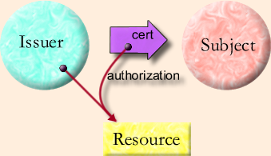

| |
Capabilities
As A |
||||||
It is illuminating to compare and contrast the properties of the capability model, as outlined above, with those of a public key infrastructure. For concreteness, we will examine SPKI (RFC2693) [Ellison99] since it has the most capability-like protocol, though all the functions we will discuss can be performed by suitable use of the facilities provided by X.509 version 3 [Ellison99]. SPKI is concerned with the specification and transfer of authorizations. Examples of these authorizations include such things as the ability to access an FTP directory, use a network printer, or logon to a remote system.
In SPKI, the entity wishing to transfer an authorization, called the Issuer, signs a certificate which specifies the public key of the Issuer, the public key of the Subject, the Authorization, the validity period, and an admittedly unenforceable [Ellison99 section 4.1.4] indication of whether the Subject may further delegate the authorization. When the Subject wishes to exercise an authorization, it presents a chain of certificates to a verifier, which checks the signatures and verifies that the Subject holds the private key corresponding to the public key specified by the certificate; this ensures that the Subject has received the authorization from an authorized issuer.
When we look at the Granovetter Diagram for a public key infrastructure, we notice that there are some significant differences from the diagram for a capability system. The most obvious is that there is no direct link between the Issuer and the Subject. The SPKI authorization could be anonymously posted to a USENET newsgroup or sent through an anonymous remailer. Because the Subject identifies itself by possessing the private half of a public/private key pair, the Issuer only needs to sign the certificate and publicly post it. The entire process can take place offline. Except for maintaining the secrecy of the private keys, secrecy is not needed to protect the rights transfer. All communications can be "in the clear". There is no way of confining the Issuer, to limit the entities that it can authorize. The lack of a line between Issuer and Subject in the diagram reflects this situation.
Another difference is that the resource need not be an object. The verifier which checks the authorization acts as a gatekeeper, in the same way that Pluribus acts as a gatekeeper to distributed E objects. However, the authorizations can be interpreted using conventional access control techniques.
In an SPKI system, auditing who performed an action and who authorized it fall naturally out of the public key structure. The auditor needs only to record the public keys of the issuer and the subject. Auditing in a Pluribus system requires the introduction of intermediary objects accompanying each rights transfer in order to keep track of the authorization path.
Because an SPKI authorization does not include a direct designation of the resource being authorized, it introduces the possibility of a confused deputy [Hardy88]. (A confused deputy uses an authorization given to it by one party to access a resource designated by a different party. In so doing, the confused deputy performs an unintended rights transfer.) If the authorizations are narrow, this problem can be minimized.
Authorization in SPKI is expensive. At a minimum each authorization decision requires two signature verification operations by the verifier. The signature on the certificate must be checked, and the signature of the Subject, proving possession of the private key, must also be checked. In addition, the Subject must sign a challenge from the verifier if the system is to remain safe from replay attacks. Compare this cost with Pluribus, where the public key operations are limited to connection establishment. In recognition of this cost, SPKI provides the Certificate Result Certificate which permits an entire certificate chain to be collapsed into one certificate.
Unless stated otherwise, all text on this page which is either unattributed or by Mark S. Miller is hereby placed in the public domain.
| |
|
report bug (including invalid html)
|
||||||||